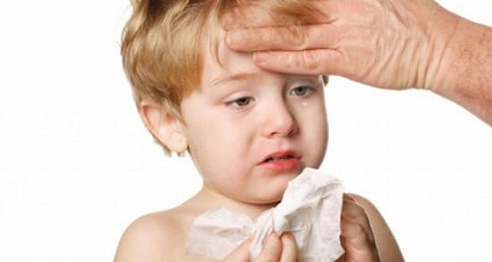

Коклюш является инфекционным заболеванием, вызываемым бактериями bordetella pertussis, которые поражают дыхательные пути. Для него характерны длительные периоды чрезвычайно сильных и неконтролируемых приступов кашля. Коклюш распространяется, когда зараженный человек чихает или кашляет, выпуская в воздух крошечные капельки слюны или слизи, содержащие бактерии. Другой человек может вдохнуть эти капельки, что приводит к заражению коклюшем. Вспышки этого заболевания часто происходят в семьях, школах или детских учреждениях.
СИМПТОМЫ
Коклюш — опасное заболевание, поскольку при нем образуется густая обильная слизь, которая забивает дыхательные пути и затрудняет дыхание. Этот избыток слизи и вызывает характерный кашель и вскрик при нем. Ребенок кашляет, чтобы вывести застоявшуюся слизь из своих маленьких дыхательных путей. Приступ кашля длится 15—30 секунд, все более усиливаясь, при этом при каждом кашлевом толчке слизь поднимается выше и может быть откашляна или проглочена. В конце приступа кашля ребенку настолько не хватает воздуха, что он очень сильно втягивает его, производя характерный вскрик. После чего примерно в течение часа ребенок отдыхает, и кажется, что с ним все в порядке. Затем слизь снова накапливается, и приступ повторяется. Эти приступы могут продолжаться от 6 до 9 недель. К другим симптомам коклюша относятся:

СОВЕТ ДОКТОРОВ СИРС: ПОПРОБУЙТЕ РАСТВОР ДЛЯ ПОТЯГИВАНИЯ Кормление младенца или малыша при коклюше может оказаться затруднительным. Очевидно, что важно не кормить ребенка во время приступов кашля. Это может привести к удушью. Кроме того, полный животик и частые кашлевые толчки — это рецепт рвоты. Кормите ребенка в промежутках между приступами кашля или вскоре после приступа. Попробуйте дать ему потягивать смузи после приступа кашля. Смузи легко есть и они легко выводятся; они легко попадают в желудок и быстро усваиваются. |
ДИАГНОСТИКА
Наличие bordetella pertussis можно подтвердить, взяв мазок из носа или задней части горла и вырастив культуру бактерий из него. Нередко результат будет отрицательным, хотя на самом деле ребенок болен коклюшем. Если у вашего врача есть веские основания подозревать, что у вашего ребенка коклюш, он может не делать этот анализ, а при необходимости назначить анализы крови или рентгеновский снимок грудной клетки.
ЛЕЧЕНИЕ
Что может выписать ваш врач. Коклюш довольно тяжело лечится, вот почему мы уделяем больше внимания профилактике его с помощью прививки. Поскольку коклюш — бактериальная инфекция, как правило, назначаются антибиотики. Однако они наиболее эффективны, когда применяются на ранней стадии заболевания. Чем позже начинается прием антибиотиков, тем меньше будет результат. Но врачи обычно выписывают антибиотики, даже если коклюш у ребенка длится уже несколько недель. Это делается для того, чтобы по возможности сократить длительность заболевания, сделать ребенка менее опасным для окружающих и предотвратить развитие вторичных инфекций. Если члену семьи поставлен диагноз коклюша, ваш врач может порекомендовать всей семье пройти курс лечения антибиотиками.
Коклюш наиболее опасен для младенцев и пожилых людей, но довольно редко приводит к летальным исходам. Возможно, младенцам младше 6 месяцев при коклюше потребуется госпитализация для профессионального наблюдения и поддержки дыхания. Безрецептурные препараты от кашля, как правило, не очень эффективны для борьбы с симптомами коклюша, и их ни в коем случае нельзя применять у детей младше двух лет и без рекомендаций врача.
Что вы можете сделать дома. В дополнение к антибиотикам можно применять домашние способы разжижения слизи, что позволяет ребенку легче ее откашливать:
СОВЕТ ДОКТОРОВ СИРС: «ЛОЖКА МЕДА...» Недавние исследования показали, что мед является безопасным и эффективным средством для облегчения кашля. Только не давайте мед детям младше 1 года. |
ПРОФИЛАКТИКА
В настоящий момент рекомендуется всем младенцам делать прививку от коклюша. Она, как правило, вводится в 2, 4, 6 и 15 месяцев, а также в 4 года и в 6 лет. Обычно она совмещается с прививкой от дифтерии и столбняка в вакцине АКДС . С тех пор как детей стали планово вакцинировать, количество случаев коклюша значительно сократилось.
Родители, сейчас всем взрослым в возрасте до 65 лет рекомендуется сделать однократную ревакцинацию от коклюша (КДС). Это поможет защитить вас, ваших детей и их бабушек и дедушек от коклюша. |
Тем не менее за последние два десятилетия ученые отметили увеличение случаев коклюша у подростков и взрослых, поскольку поствакцинальный иммунитет против коклюша теряет свою эффективность по прошествии 4—12 лет. Это означает, что, хотя вакцина эффективно защищает младенцев и детей, у подростков или взрослых она может быть неэффективна. Сейчас рекомендуется всем подросткам в возрасте от 11 до 18 лет ревакцинация от коклюша вакциной КДС. Это помогает защитить подростков и взрослых от вспышек коклюша, так же как младенцев и детей от заражения. Поговорите со своим врачом о том, нужна ли вашему ребенку или подростку эта прививка.
Другие важные профилактические меры включают правильные гигиенические привычки в семье, и, как упоминалось выше, врач может порекомендовать всей семье пройти курс лечения антибиотиками. Поскольку это очень важно, мы повторим, что в группе самого высокого риска находятся дети младше 6 месяцев и пожилые люди.
Здоровье ребенка от докторов Сирс / Сирс У. и др.